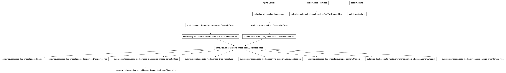
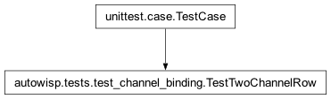

autowisp.tests.test_channel_binding module
Class Inheritance Diagram

Tests for binding a channel to each column of the series table.
Its own module because these need a project holding two channels, and a
session per kind of camera: a colour one with a choice to offer and a
monochrome one without. The fixture in test_diagnostics_views records
a single channel, and giving it a second would change what every
series-table test there sees.
- class autowisp.tests.test_channel_binding.TestTwoChannelRow(methodName='runTest')[source]
Bases:
TestCase
A row binding a channel per axis, which is what the columns are for.
Its own fixture rather than the shared one, which records a single channel: giving that one a second would change what every other series-table test sees. Two sessions, one per kind of camera – a colour one with a choice to offer and a monochrome one without – since the table treats them differently and a project may hold both.
- classmethod _add_camera(db_session, channels)[source]
Describe a camera defining channels, and return its id.
- classmethod _add_session(db_session, label, camera_id, jds)[source]
Add one session of object frames and return its id.
- classmethod _fill_database()[source]
Two sessions: a colour camera’s frames, and a monochrome one’s.
- mono_values = [11.0, 12.0]
The monochrome session’s frames, in its camera’s one channel.
- rows_for(x_diagnostic, y_diagnostic)[source]
Return
{session_id: row}for an axis pair, one type here.
- classmethod setUpClass()[source]
Hook method for setting up class fixture before running tests in the class.
- classmethod tearDownClass()[source]
Hook method for deconstructing the class fixture after running all tests in the class.
- test_a_column_per_axis_that_binds_one()[source]
Two axes over a diagnostic ask for two channels, not one.
- test_a_completed_row_summons_a_spare()[source]
So that a second binding of the same series can be built.
- test_a_monochrome_session_arrives_bound()[source]
One channel to the camera’s name is no choice at all.
Demanding a click with one possible outcome before anything can be drawn is ceremony, so the row is bound and counted at render – which is exactly the table this page had before a series could bind more than one channel.
- test_no_spare_once_every_binding_is_present()[source]
Two channels, two rows: a third could only repeat one.
- test_one_quantity_on_both_axes_in_two_channels()[source]
bg_centeragainstbg_center: the plainest colour plot.The two axes name one quantity and differ only in what the row bound each column to. Resolving them by name alone would draw one binding on both axes – a perfect diagonal, and no error anywhere.
- test_rebinding_an_earlier_row_summons_nothing()[source]
A spare is already waiting below it, and one is enough.
- test_the_columns_are_split_between_the_axes()[source]
An axis takes as many channels as the quantity it draws.
jdtakes none, so the row’s one channel belongs to the other axis – and a slice taken from the wrong end would bind it to the time instead and refuse, or worse, silently shift.
- test_which_rows_are_drawn()[source]
Every row is posted, so four of them have to be skipped here.
Two are the user saying not to draw it, and two name no data: a row still to be bound, and one from a page whose script predates the channel columns, which posts no channels at all. That last is skipped rather than refused – a stale page should draw nothing, not turn the response into an error page. Defaulting
selectedto true keeps a payload stored before the table posted every row still plotting.
- values_of = {'B': [2.0, 3.0, 8.0], 'R': [8.0, 6.0, 4.0]}
bg_centerper channel, distinct so that reading the wrong one cannot pass by coincidence.
- autowisp.tests.test_channel_binding._first_jd = 2460000.5
JD of the colour session’s first frame.
- autowisp.tests.test_channel_binding._night_separation = 1.0
The monochrome session is a night later, so the two cannot overlap.